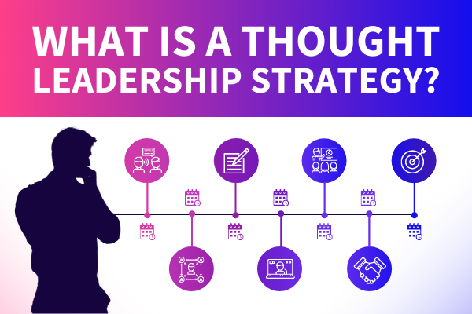

El Thought Leadership es una herramienta poderosa que permite a expertos influir en su industria y establecerse como líderes referentes. El Thought Leadership, que se podría se traducir al español como liderazgo de pensamiento, está influyendo significativamente en los comportamientos de compra de los tomadores de decisiones y en los líderes empresariales a nivel mundial, pero, ¿a qué se debe su creciente impacto en la actualidad? Más que ser una nueva tendencia, el Thought Leadership es una herramienta poderosa que permite a expertos influir en su industria y establecerse como líderes referentes. Cada vez más las personas ponen su confianza más en lo que dicen los líderes de opinión y cómo su experiencia valida la inclinación por una línea de pensamiento o elección de un producto/servicio. El 65,4% de las empresas ya incluyen el Thought Leadership en su marketing de contenidos y el 29,5% planea comenzar a hacerlo pronto, según un estudio realizado por Semrush, en el que entrevistaron a más de 300 especialistas en mercadeo y expertos en la industria. El Thought Leadership influye y es influido por los principales tomadores de decisiones en todas las industrias; sus resultados se traducen no solo en una mayor conciencia, sino también en participación, clientes potenciales y ventas. El mismo estudio resaltó que el 81,4% del contenido de liderazgo intelectual genera tráfico orgánico, el 64,9% aumenta el seguimiento y la participación en las redes sociales y el 47,6% genera clientes potenciales y ventas reales.
Para convertirse los empresarios, emprendedores y altos mandos en líderes de pensamiento en sus respectivos campos, es necesario pensar en acciones prácticas y datos clave para ayudar a los líderes latinoamericanos a aprovechar esta oportunidad y destacarse en el mercado global.

El Thought Leadership no solo mejora la percepción de una marca o un líder, sino que también busca generar materiales de valor para las diferentes audiencias, que no fuese posible obtener, por medio de otras fuentes o recursos. Más que crear contenido de valor, es fundamental que haya una estrategia bien pensada y sincronizada detrás de cada líder de pensamiento.
lucas
perez
29